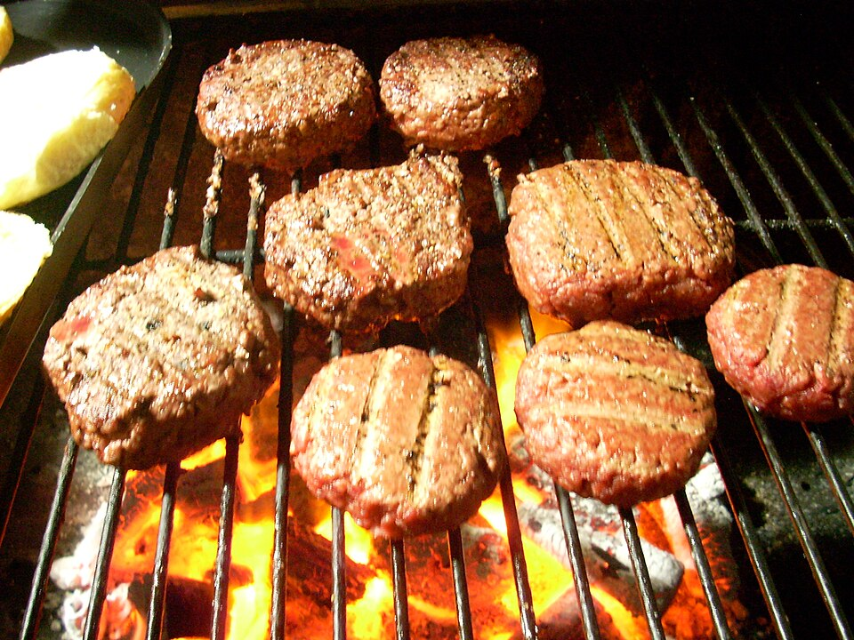

Carnes · Bovinos
Hambúrguer

Ingredientes
- 250 g de carne de boi moída
- 1 cebola picada
- 1 dente de alho amassado
- sal e pimenta-do-reino a gosto
- 1 pão francês amanhecido embebido em 8 colheres (sopa) de leite
- 1 ovo
Modo de preparo
- Tempere a carne com cebola, alho, sal e pimenta. Incorpore o pão embebido no leite e o ovo, se precisar de liga. Misture bem com as mãos até ficar homogêneo.
- Divida em 4 porções iguais, modele os hambúrgueres e congele.
Observação
Para manter o formato, congele primeiro numa assadeira forrada com filme; depois embrulhe um a um. Congelamento: empilhe intercalando papel-manteiga ou filme. Descongelamento: frite direto no óleo quente, sem descongelar.